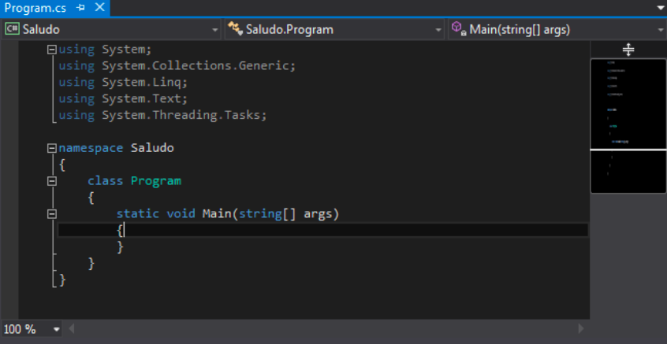

<section data-markdown>
<script type="text/template">
## Integrated Development Environments
### Using Visual Studio
</script>
</section>

<section>
    <h2>IntelliJ IDEA</h2>
    <table>
        <tr>
            <td valign="middle" width="30%"></td>
            <td>
                <ul>
                    <li>Specific purpose IDE</li>
                    <li>Initially conceived to work with C++ and Visual Basic</li>
                    <li><em>Community</em>: free</li>
                    <li><em>Professional</em>: commercial</li>
                    <li><em>visualstudio.microsoft.com</em></li>
                </ul>
            </td>
        </tr>
    </table>
</section>

<section data-markdown>
<script type="text/template">
## Installation

- Choose *workloads*
   - Recommended *.NET desktop development* 

<div align="center">
    
</div>

</script>
</section>

<section data-markdown>
<script type="text/template">
## Creating projects (1/2)

- *File* > *New project*
- C# console application, usually

<div align="center">
    
</div>

</script>
</section>
    
<section data-markdown>
<script type="text/template">
## Creating projects (2/2)

- Choose project name and location
- A new project with a default **Program.cs** file will be shown
- Click on *Start* button, or `F5`, or `Ctrl + F5`

<div align="center">
    
</div>

</script>
</section>

